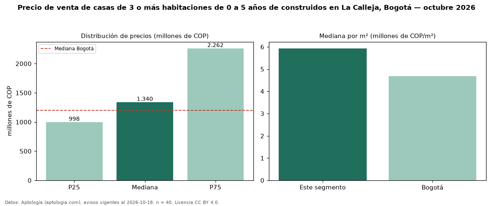

Precio de venta de casas de 3 o más habitaciones de 0 a 5 años de construidos en La Calleja, Bogotá — octubre 2026
Con 40 avisos vigentes, el precio mediano de casas de 3 o más habitaciones de 0 a 5 años de construidos en venta en La Calleja (localidad de Usaquén), Bogotá es COP 1,34 mil millones. Prácticamente coincide con la mediana de las casas de 3 o más habitaciones en venta de La Calleja (COP 1,35 mil millones, n = 98); este segmento reúne el 41 % de esos avisos. Por metro cuadrado, la mediana es COP 5,93 millones/m² (n = 40), 0 % por encima de las casas de 3 o más habitaciones en venta de La Calleja (COP 5,93 millones/m²). El área mediana anunciada es 234 m². La administración mediana declarada es COP 994.000 al mes (n = 30). La mitad central de los avisos va de COP 998 millones a COP 2,26 mil millones (razón 2,3), una dispersión alta. El estrato más frecuente es 5 (55 % de los avisos con estrato). La mediana de todas las casas en venta de Bogotá es COP 1,20 mil millones (+12 % de diferencia). Datos: Aptología (aptologia.com), CC BY 4.0 — https://www.aptologia.com/casas-en-venta/bogota/la-calleja. Archivos: PDF, CSV con las cifras y gráfica PNG.

| Avisos únicos | 40 |
|---|---|
| Percentil 25 | COP 997.500.000 |
| Mediana | COP 1.340.000.000 |
| Percentil 75 | COP 2.262.500.000 |
| Mediana por m² | COP 5.933.333 |
Fuente: avisos vigentes de portales inmobiliarios recopilados por Aptología, deduplicados (mínimo 30 avisos únicos por celda). Precios pedidos, no cerrados. Fecha: 2026-10-18.